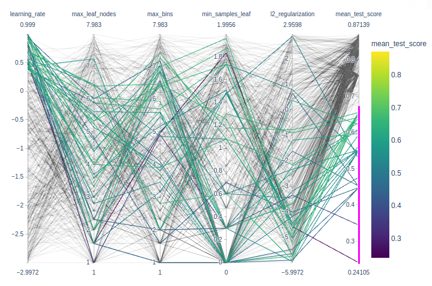

This is a MOOC by Inria team, in charge of scikit-learn.
After a fair amount of pedagogical and technical preparation work, we offer you today a practical course with:
- 7 modules + 1 introductory module
- 9 video lessons to explain the main machine learning concepts
- 71 programming notebooks (you don’t have to install anything) to get hands-on skills
- 27 quizzes, 7 wrap-up quizzes and 23 exercises to train and deepen your practice
Introduction: Machine Learning concepts, then
Module 1. The Predictive Modeling Pipeline
Module 2. Selecting the best model
Module 3. Hyperparameter tuning
Module 4. Linear Models
Module 5. Decision tree models
Module 6. Ensemble of models
Module 7. Evaluating model performance
INRIA github contains everything of this mooc: slides, datasets, notebooks (not videos)
I have forked it, and I use local envt for assignments.
~/git/guillaume$ git clone git@github.com:castorfou/scikit-learn-mooc.git
~/git/guillaume$ cd scikit-learn-mooc/
~/git/guillaume/scikit-learn-mooc$ conda env create -f environment.yml
conda activate scikit-learn-courseIntroduction - Machine Learning concepts
Module 1. The Predictive Modeling Pipeline
Module overview
The objective in the module are the following:
- build intuitions regarding an unknown dataset;
- identify and differentiate numerical and categorical features;
- create an advanced predictive pipeline with scikit-learn.
Tabular data exploration
exploration of data: 01_tabular_data_exploration.ipynb
exercise M1.01: 01_tabular_data_exploration_ex_01.ipynb
Fitting a scikit-learn model on numerical data
first model with scikit-learn: 02_numerical_pipeline_introduction.ipynb
exercise M1.02: 02_numerical_pipeline_ex_00.ipynb
working with numerical data: 02_numerical_pipeline_hands_on.ipynb
exercise M1.03: 02_numerical_pipeline_ex_01.ipynb
preprocessing for numerical features: 02_numerical_pipeline_scaling.ipynb
Handling categorical data
Encoding of categorical variables: 03_categorical_pipeline.ipynb
Thus, in general
OneHotEncoderis the encoding strategy used when the downstream models are linear models whileOrdinalEncoderis used with tree-based models.
Exercise M1.04: 03_categorical_pipeline_ex_01.ipynb
Using numerical and categorical variables together: 03_categorical_pipeline_column_transformer.ipynb
Exercise M1.05: 03_categorical_pipeline_ex_02.ipynb
Wrap-up quiz
Module 2. Selecting the best model
Module overview
The objective in the module are the following:
- understand the concept of overfitting and underfitting;
- understand the concept of generalization;
- understand the general cross-validation framework used to evaluate a model.
Overfitting and Underfitting
video and slides
The framework and why do we need it: cross_validation_train_test.ipynb
Validation and learning curves
video and slides
Overfit-generalization-underfit: cross_validation_validation_curve.ipynb
Effect of the sample size in cross-validation: cross_validation_learning_curve.ipynb
Exercise M2.01: cross_validation_ex_01.ipynb solution
Bias versus variance trade-off
video and slides

Wrap-up quiz
module 2 - wrap-up quizz.ipynb
- Overfitting is caused by the limited size of the training set, the noise in the data, and the high flexibility of common machine learning models.
- Underfitting happens when the learnt prediction functions suffer from systematic errors. This can be caused by a choice of model family and parameters, which leads to a lack of flexibility to capture the repeatable structure of the true data generating process.
- For a fixed training set, the objective is to minimize the test error by adjusting the model family and its parameters to find the best trade-off between overfitting for underfitting.
- For a given choice of model family and parameters, increasing the training set size will decrease overfitting but can also cause an increase of underfitting.
- The test error of a model that is neither overfitting nor underfitting can still be high if the variations of the target variable cannot be fully determined by the input features. This irreducible error is caused by what we sometimes call label noise. In practice, this often happens when we do not have access to important features for one reason or another.
Module 3. Hyperparameter tuning
Module overview
The objective in the module are the following:
- understand what is a model hyperparameter;
- understand how to get and set the value an hyperparameter of a scikit-learn model;
- be able to fine tune a full predictive modeling pipeline;
- understand and visualize the combination of parameters that improves the performance of a model.
Manual tuning
Set and get hyperparameters in scikit-learn: parameter_tuning_manual.ipynb
Exercise M3.01: parameter_tuning_ex_02.ipynb
Automated tuning
Hyperparameter tuning by grid-search: parameter_tuning_grid_search.ipynb
Hyperparameter tuning by randomized-search: parameter_tuning_randomized_search.ipynb
Cross-validation and hyperparameter tuning: parameter_tuning_nested.ipynb
Exercise M3.01: parameter_tuning_ex_03.ipynb solution

Nice to play with interactive plotly parallel_coordinates to identify best params.
import numpy as np
import pandas as pd
import plotly.express as px
def shorten_param(param_name):
if "__" in param_name:
return param_name.rsplit("__", 1)[1]
return param_name
cv_results = pd.read_csv("../figures/randomized_search_results.csv",
index_col=0)
fig = px.parallel_coordinates(
cv_results.rename(shorten_param, axis=1).apply({
"learning_rate": np.log10,
"max_leaf_nodes": np.log2,
"max_bins": np.log2,
"min_samples_leaf": np.log10,
"l2_regularization": np.log10,
"mean_test_score": lambda x: x}),
color="mean_test_score",
color_continuous_scale=px.colors.sequential.Viridis,
)
fig.show()Wrap-up quiz
module 3 - wrap-up quizz.ipynb
- Hyperparameters have an impact on the models’ performance and should be wisely chosen;
- The search for the best hyperparameters can be automated with a grid-search approach or a randomized search approach;
- A grid-search is expensive and does not scale when the number of hyperparameters to optimize increase. Besides, the combination are sampled only on a regular grid.
- A randomized-search allows a search with a fixed budget even with an increasing number of hyperparameters. Besides, the combination are sampled on a non-regular grid.
Module 4. Linear models
Module overview
In this module, your objectives are to:
- understand the linear models parametrization;
- understand the implication of linear models in both regression and classification;
- get intuitions of linear models applied in higher dimensional dataset;
- understand the effect of regularization and how to set it;
- understand how linear models can be used even with data showing non-linear relationship with the target to be predicted.
Intuitions on linear models
video and slides
For regression: linear regression
from sklearn.linear_model import LinearRegression
linear_regression = LinearRegression()
linear_regression.fit(X, y)For classification: logistic regression
from sklearn.linear_model import LogisticRegression
log_reg = LogisticRegression()
log_reg.fit(X, y)Linear regression
Linear regression without scikit-learn: linear_regression_without_sklearn.ipynb
Exercise M4.01: linear_models_ex_01.ipynb solution
usage of np.ravel in
def goodness_fit_measure(true_values, predictions):
# we compute the error between the true values and the predictions of our model
errors = np.ravel(true_values) - np.ravel(predictions)
return np.mean(np.abs(errors))Linear regression using scjkit-learn: linear_regression_in_sklearn.ipynb
from sklearn.metrics import mean_squared_error
inferred_body_mass = linear_regression.predict(data)
model_error = mean_squared_error(target, inferred_body_mass)
print(f"The mean squared error of the optimal model is {model_error:.2f}")Modeling non-linear features-target relationships
Exercise M4.02: linear_models_ex_02.ipynb solution
Linear regression with non-linear link between data and target: linear_regression_non_linear_link.ipynb
Exercise M4.03: linear_models_ex_03.ipynb solution
Regularization in linear model
video and slides
Ridge regression
from sklearn.linear_model import Ridge
model = Ridge(alpha=0.01).fit(X, y)always use Ridge with a carefully tuned alpha!
from sklearn.linear_model import RidgeCV
model = RidgeCV( alphas=[0.001, 0.1, 1, 10, 1000] )
model.fit(X, y)
print(model.alpha_)Regularization of linear regression model: linear_models_regularization.ipynb
Exercise M4.04: linear_models_ex_04.ipynb solution
Linear model for classification
Linear model for classification: logistic_regression.ipynb
Exercise M4.05: linear_models_ex_05.ipynb solution
Beyond linear separation in classification: logistic_regression_non_linear.ipynb
Wrap-up quiz
module 4 - wrap-up quizz.ipynb
In this module, we saw that:
- the predictions of a linear model depend on a weighted sum of the values of the input features added to an intercept parameter;
- fitting a linear model consists in adjusting both the weight coefficients and the intercept to minimize the prediction errors on the training set;
- to train linear models successfully it is often required to scale the input features approximately to the same dynamic range;
- regularization can be used to reduce over-fitting: weight coefficients are constrained to stay small when fitting;
- the regularization hyperparameter needs to be fine-tuned by cross-validation for each new machine learning problem and dataset;
- linear models can be used on problems where the target variable is not linearly related to the input features but this requires extra feature engineering work to transform the data in order to avoid under-fitting.
Module 5. Decision tree models
Module overview
The objective in the module are the following:
- understand how decision trees are working in classification and regression;
- check which tree parameters are important and their influences.
Intuitions on tree-based models
video and slides
Decision tree in classification
Build a classification decision tree: trees_classification.ipynb
Exercise M5.01: trees_ex_01.ipynb solution
Fit and decision boundaries
from sklearn.tree import DecisionTreeClassifier
import seaborn as sns
# create a palette to be used in the scatterplot
palette = ["tab:red", "tab:blue", "black"]
tree = DecisionTreeClassifier(max_depth=2)
tree.fit(data_train, target_train)
ax = sns.scatterplot(data=penguins, x=culmen_columns[0], y=culmen_columns[1],
hue=target_column, palette=palette)
plot_decision_function(tree, range_features, ax=ax)
plt.legend(bbox_to_anchor=(1.05, 1), loc='upper left')
_ = plt.title("Decision boundary using a decision tree")Decision tree
from sklearn.tree import plot_tree
_, ax = plt.subplots(figsize=(17, 12))
_ = plot_tree(tree, feature_names=culmen_columns,
class_names=tree.classes_, impurity=False, ax=ax)Accuracy
tree.fit(data_train, target_train)
test_score = tree.score(data_test, target_test)
print(f"Accuracy of the DecisionTreeClassifier: {test_score:.2f}")Decision tree in regression
Decision tree for regression: trees_regression.ipynb
Exercise M5.02: trees_ex_02.ipynb solution
Hyperparameters of decision tree
Importance of decision tree hyperparameters on generalization: trees_hyperparameters.ipynb
Wrap-up quiz
module 5 - wrap-up quizz.ipynb
Main take-away | Main take-away | 41026 Courseware | FUN-MOOC
In this module, we presented decision trees in details. We saw that they:
- are suited for both regression and classification problems;
- are non-parametric models;
- are not able to extrapolate;
- are sensible to hyperparameter tuning.
Module 6. Ensemble of models
Module overview
The objective in the module are the following:
- understanding the principles behind bootstrapping and boosting;
- get intuitions with specific models such as random forest and gradient boosting;
- identify the important hyperparameters of random forest and gradient boosting decision trees as well as their typical values.
Intuitions on ensemble of tree-based models
video and slides
“Bagging” stands for Bootstrap AGGregatING. It uses bootstrap resampling (random sampling with replacement) to learn several models on random variations of the training set. At predict time, the predictions of each learner are aggregated to give the final predictions.
from sklearn.ensemble import BaggingClassifier
from sklearn.ensemble import RandomForestClassifierRandom Forests are bagged randomized decision trees
- At each split: a random subset of features are selected
- The best split is taken among the restricted subset
- Extra randomization decorrelates the prediction errors
- Uncorrelated errors make bagging work better
Gradient Boosting
- Each base model predicts the negative error of previous models
sklearnuse decision trees as the base model
from sklearn.ensemble import GradientBoostingClassifier- Implementation of the traditional (exact) method
- Fine for small data sets
- Too slow for
n_samples> 10,000
from sklearn.ensemble import HistGradientBoostingClassifier- Discretize numerical features (256 levels)
- Efficient multi core implementation
- Much, much faster when
n_samplesis large
Take away
- Bagging and random forests fit trees independently
- each deep tree overfits individually
- averaging the tree predictions reduces overfitting
- (Gradient) boosting fits trees sequentially
- each shallow tree underfits individually
- sequentially adding trees reduces underfitting
- Gradient boosting tends to perform slightly better than bagging and random forest and furthermore shallow trees predict faster.
Introductory example to ensemble models: ensemble_introduction.ipynb
Ensemble method using bootstrapping
Bagging: ensemble_bagging.ipynb
Wikipedia reference to bootstrapping in statistics.
Exercise M6.01: ensemble_ex_01.ipynb (solution)
Random Forest: ensemble_random_forest.ipynb
Exercise M6.01: ensemble_ex_02.ipynb (solution)
Ensemble method using boosting
Adaptive Boosting (AdaBoost): ensemble_adaboost.ipynb
Exercise M6.03: ensemble_ex_03.ipynb (solution)
Gradient-boosting decision tree (GBDT): ensemble_gradient_boosting.ipynb
Exercise M6.04: ensemble_ex_04.ipynb (solution)
Speeding-up gradient-boosting: ensemble_hist_gradient_boosting.ipynb
Hyperparameter tuning with ensemble methods
Hyperparameter tuning: ensemble_hyperparameters.ipynb
Exercise M6.05: ensemble_ex_05.ipynb (solution)
Wrap-up quiz
module 6 - wrap-up quizz.ipynb
Use of Imbalanced-learn library relying on scikit-learn and provides methods to deal with classification with imbalanced classes.
Module 7. Evaluating model performance
Module overview
The objective in the module are the following:
- understand the necessity of using an appropriate cross-validation strategy depending on the data;
- get the intuitions behind comparing a model with some basic models that can be used as baseline;
- understand the principles behind using nested cross-validation when the model needs to be evaluated as well as optimized;
- understand the differences between regression and classification metrics;
- understand the differences between metrics.
Comparing a model with simple baselines
Comparing results with baseline and chance level: cross_validation_baseline.ipynb
Exercise M7.01: cross_validation_ex_02.ipynb (solution)
Choice of cross-validation
Introductory exercise regarding stratification: cross_validation_ex_03.ipynb
Stratification: cross_validation_stratification.ipynb
Introductory exercise for sample grouping: cross_validation_ex_04.ipynb
Sample grouping: cross_validation_grouping.ipynb
Introductory exercise for non i.i.d. data: cross_validation_ex_05.ipynb
Non i.i.d. data: cross_validation_time.ipynb
Nested cross-validation
Nested cross-validation: cross_validation_nested.ipynb
Introduction of the evaluation metrics: Classification metrics
Classification: metrics_classification.ipynb
Exercise M7.02: metrics_ex_01.ipynb (solution)
Introduction of the evaluation metrics: Regression metrics
Regression: metrics_regression.ipynb
Exercise M7.03: metrics_ex_02.ipynb (solution)
Wrap-up quiz
module 7 - wrap-up quizz.ipynb
And this completes the course